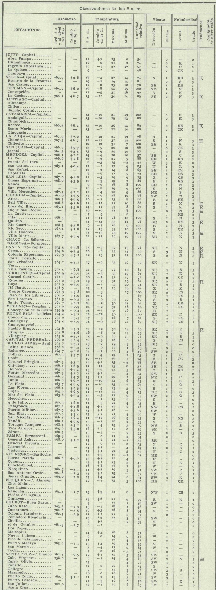

Al 31 de julio del 2025, la Organización Meteorológica Mundial (OMM), a través de éste documento, reconoce como récord de temperatura máxima para América del Sur (ver página 3) los 48.9°C registrados en Rivadavia (provincia de Salta, 24°15'S 62°54'W 205 msnm) el 11 de diciembre de 1905. Las estadísticas oficiales 1901-1950 de Rivadavia dan cuenta de un valor máximo de 48.9°C en diciembre.
Por medio del Centro para el Análisis de Datos Ambientales del Reino Unido (CEDA, por sus siglas en inglés) es posible tener acceso a las cartas del tiempo, de publicación diaria, de la OMA/SMN (Oficina Meteorológica Argentina, Servicio Meteorológico Nacional) de la primera mitad del siglo XX. En particular, la carta del domingo 12 de diciembre de 1905 contiene, entre otros datos, las temperaturas máximas registradas el día anterior, expresadas en números enteros. ¿Qué valores se observaron en el país aquel 11 de diciembre?
Las temperaturas más altas fueron: 35°C en Recreo (Catamarca), 34°C en San Miguel de Tucumán, La Cocha y Posadas, 33°C en Rio Seco (Córdoba), Ceres, Corrientes Capital. En la Ciudad de Salta la máxima fue de 27°C, en Rosario de la Frontera (a 280 km de Rivadavia) 29°C. Sin bien están ausentes datos claves, como puede ser los de la provincia de Formosa, Chaco y Santiago del Estero, es totalmente inverosímil que Rivadavia haya registrado aquel día una temperatura de 49°C, totalmente fuera de tono con lo observado en el resto de la región circundante. El norte argentino no estaba atravesando ninguna ola de calor excepcional. Es legítimo considerarlo un dato erróneo, probablente fruto de pésimas condiciones de medición.
La situación sinóptica del 11 de diciembre de 1905 por la mañana era de un débil anticiclón de 1020 hPa en el norte patagónico, acompañada de una débil baja frente a las costas de la provincia de Buenos Aires. La isoterma de 25°C cubría el Chaco Austral.
¿Es posible que la fecha sea incorrecta?
Villa de María del Rio Seco es una localidad situada en el norte de la provincia de Córdoba, atravesada por la Ruta Nacional 9, y a menos de 30 km del límite con la provincia de Santiago del Estero. Es conocida por ostentar un valor de temperatura de 49.1°C, ocurrido el 2 de enero de 1920. Sin embargo, la carta del tiempo del 3 de enero de 1920 desmiente totalmente este dato. En él se informa, entre otras cuestiones, las temperaturas máxima registradas el día precedente, en números enteros. Córdoba Capital tuvo 27°C como valor máximo, San Juan 34°C, Catamarca 32°C, Rio Cuarto 26°C, Ceres 28°C. En definitiva, tal como pasa con Rivadavia, se trata de un dato a todas luces erróneo. El récord 1931-2025 para Villa de María es de 44.6°C, alcanzado en dos oportunidades: el 4 de noviembre de 1938 y el 4 de enero de 1963.
{kind=link}
{kind=link}
{kind=link}